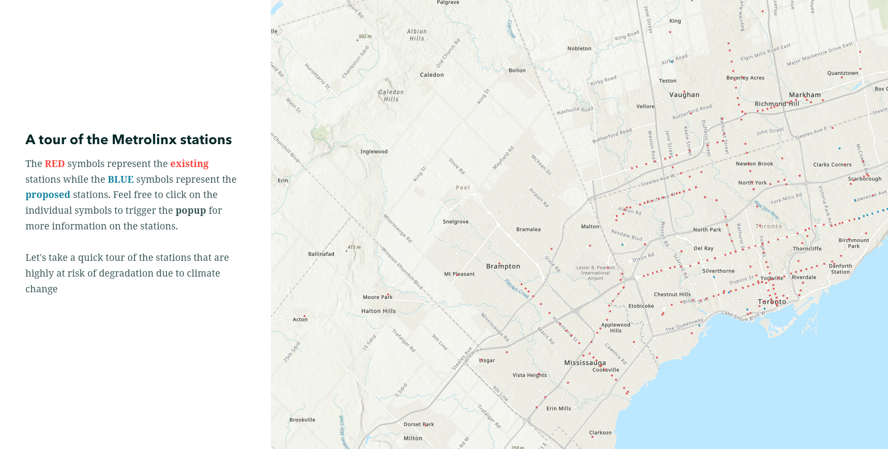
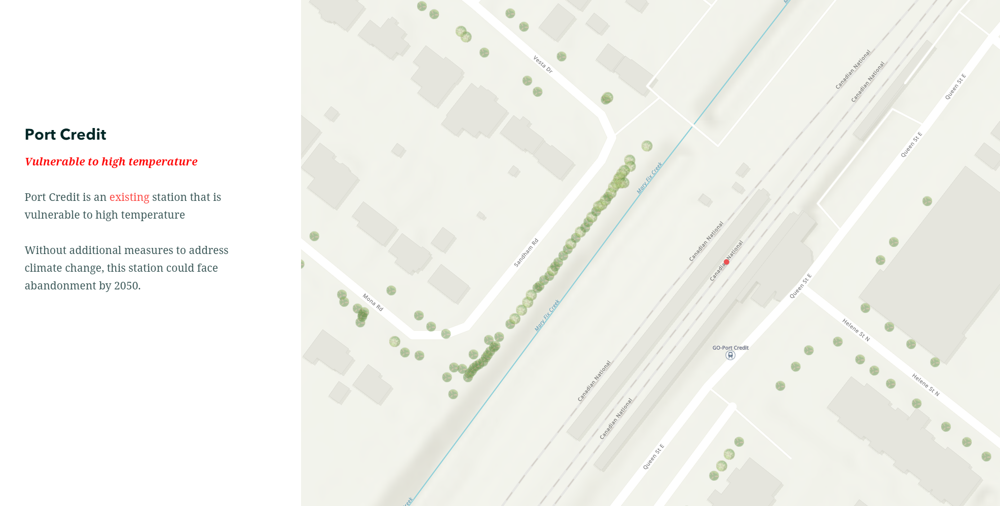
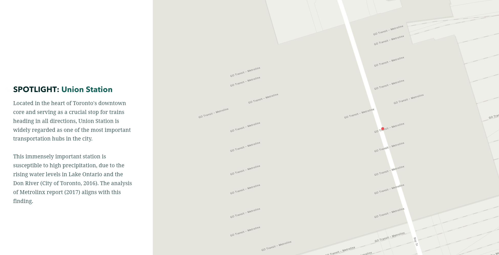
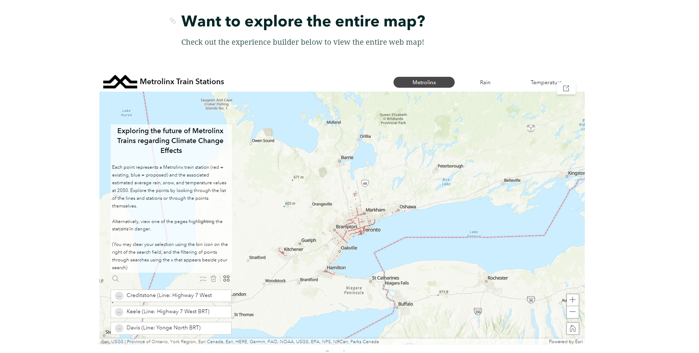

Utilization of StoryMaps to highlight highly vulnerable areas
StoryMap is an exceptional tool for integrating web maps and text to develop a captivating narrative. In this project, ESRI's StoryMap was utilized to spotlight the stations that are most susceptible to climate change. The interactive legend skillfully directs the user's attention to specific areas on the map that Metrolinx is particularly concerned about.
It is also an excellent platform for combining multiple AGOL products. In this project, both ArcGIS Online Web Map and Experience Builder were effectively deployed, leveraging the strengths of each tool. StoryMaps empowers the publisher to guide the reader through the data in a specific way, allowing them to narrate the information as intended. We found that StoryMap is a great tool for displaying complex/convoluted data and effectively directing the user's attention to specific ideas.
Check out our full StoryMap!Key attributes of our StoryMap
Interactive popup and legend
Users are able to understand the web map without a separate legend thanks to the design options available on StoryMap. A popup that was previously configured on the Web Map is also functional here.
Highlight key locations and draw the attention of the user to a specific area
It can be hard to follow convoluted and crowded spatial data on the map. StoryMap's slidecar function allows the publisher to draw the user's attention to a certain location. For this project, we wanted the user to focus on areas that are highly vulnerable to climate change.



Deploy experience builder to provide additional resources to the user
Users may want to explore the web map on their own. StoryMap can deploy other AGOL products such as experience builder to provide a more interactive experience. 